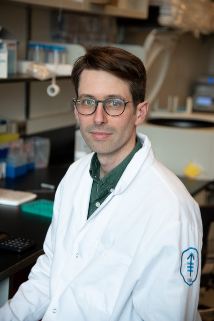

John Maciejowski, PhD
John started the lab in 2017. He works on how genomic instability shapes cancer genomes and on how cancer cells manage the immune consequences of their own instability. He teaches chromosome structure at Gerstner Sloan Kettering and the nuclear envelope at Weill Cornell.
He did his PhD at MSKCC in the inaugural class at the Gerstner Sloan Kettering Graduate School, working with Prasad Jallepalli on the mechanisms that keep chromosome segregation accurate during mitosis. He then joined Titia de Lange's lab at Rockefeller University, where he found that telomere dysfunction gives rise to complex clusters of chromosome rearrangement and hypermutation. He is an Associate Member of the Molecular Biology Program at SKI and an Associate Professor at Gerstner Sloan Kettering and in the Weill Cornell BCMB program.
He also spends time with his family.